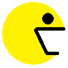
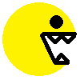
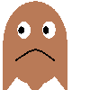
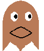

<!DOCTYPE html>
<html lang="en">
<head>
    <meta charset="UTF-8">
    <meta http-equiv="X-UA-Compatible" content="IE=edge">
    <meta name="viewport" content="width=device-width, initial-scale=1.0">
    <title>키로 별이동하기(심화)</title>
    <script>
        document.addEventListener('DOMContentLoaded',()=>{
            // 별의 초기 설정
            const star = document.createElement('h1')
            const circle =document.createElement('h1')
            const header = document.createElement('h1')
            document.body.append(star,circle,header)
            // star.innerHTML = '★'
            star.innerHTML = ' '
            star.style.position = 'absolute'
            circle.innerHTML = '●'

            let status = true
            let moster = true
            // 이미지로 움직임표현하기
            setInterval(()=>{
                if(status){
                    star.innerHTML = ' '
                }
                else{
                    star.innerHTML = ' '
                }
                status = !status
            },200)

            // setInterval(()=>{
            //     if(moster){
            //         circle.innerHTML = ' '
            //     }
            //     else{
            //         circle.innerHTML = ' '
            //     }
            //     moster = !moster
            // },200)
 
 

            //별의 이동을 출력하는 기능
            let[x, y] = [0, 0]
            const block = 20
            const print = () =>{
                star.style.left = `${x*block}px`            
                star.style.top = `${y*block}px`  
            }
            print()
            const keys = {ArrowLeft:37, ArrowUp:38, ArrowRight:39, ArrowDown:40}
            const{ArrowLeft:left, ArrowUp:up, ArrowRight:right, ArrowDown:down} = keys
            check = 0;
            document.addEventListener('keydown',event=>{
                check = event.keyCode
                if(left===check){ x-= 1; star.style.transform = 'scaleX(-1)'} //좌우대칭
                if(up===check){y-= 1;  star.style.transform = 'rotate(270deg)'}
                if(right===check){ x+= 1; star.style.transform = 'scaleX(1)'}
                if(down===check){ y+= 1;  star.style.transform = 'rotate(90deg)'}
                print()
            })


        
        })
    </script>
</head>
<body>
     <!-- 랜덤하게  '●' 가 출현
            별이 가까이 가서 겹치면
            점수 +1 이되고
            '●' 는 또 다른 곳에 랜덤 출현 -->
            
            <!-- /* 아이템을 먹었을 때 사라지는 코드 1 */
         if (x == ix && y== iy ){ // 정확한 위치에서 동작
             count ++ // 먹었을때 카운팅 
            itemrandom() // 아이템 위치를 재생성 하는 함수
         }   
        /* 아이템을 먹었을 때 사라지는 코드 2 */
           if ( Math.abs( x - ix ) < 4 && Math.abs( y - iy ) < 4 ){ // 두거리의 차를 어느정도 허용하는 내용.
            count ++
            itemrandom()
            abs = 절대 값
         }    -->
          
</body>
</html>